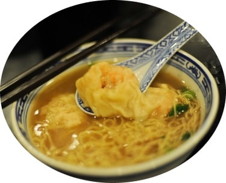
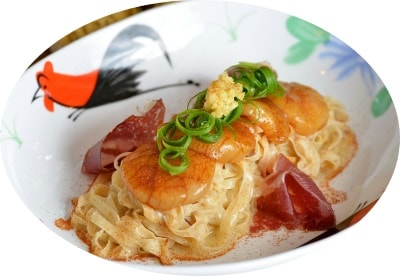

In Hong Kong a vast array of dishes are available for your pleasure. With enough
variance to satify even the most niche of cravings, you will surely have your hunger satiated to your
hearts content.
Wantom Noodles

In Hong Kong and Guangzhou, wonton noodles are usually served in steaming hot soup with shrimp wontons and garnished with leafy vegetables. There are plenty of variations of this popular Cantonese dish, with different toppings and garnishes. For example, the soup and wontons in a separate bowl, the noodles being served relatively dry, with the toppings and garnishes, dressed with sauce, dipping the noodles in the soup to eat it.
Shrimp roe noodles

This is a classic Cantonese Noodles dish, the Shrimp Roe Noodle, or 蝦子麵. It's a traditional chinese noodle dish that has fallen out of favor in recent years because...well, actually, I don't really know why! It is a stunning, simple yet complex, gorgeous to look at, and extra super yummy noodle dish (if made correctly!) Plus, I don't know of any other noodle or pasta dish quite like this. If that ain't enough to make this Shrimp Roe Noodle dish a super star, I don't know what is!!
Dumplings
The wonton (雲呑/餛飩) is another kind of dumpling. It is typically boiled in a light broth or soup and made with a meatier filling. The skin wrapping for wontons is different—thinner and less elastic—than that used for jiaozi. Wontons are more popular in Southern China (Shanghai, Guangdong, Hong Kong etc.) whereas in Northern China, jiaozi are more popular. Jiaozi, wonton and potstickers are all wrapped differently.